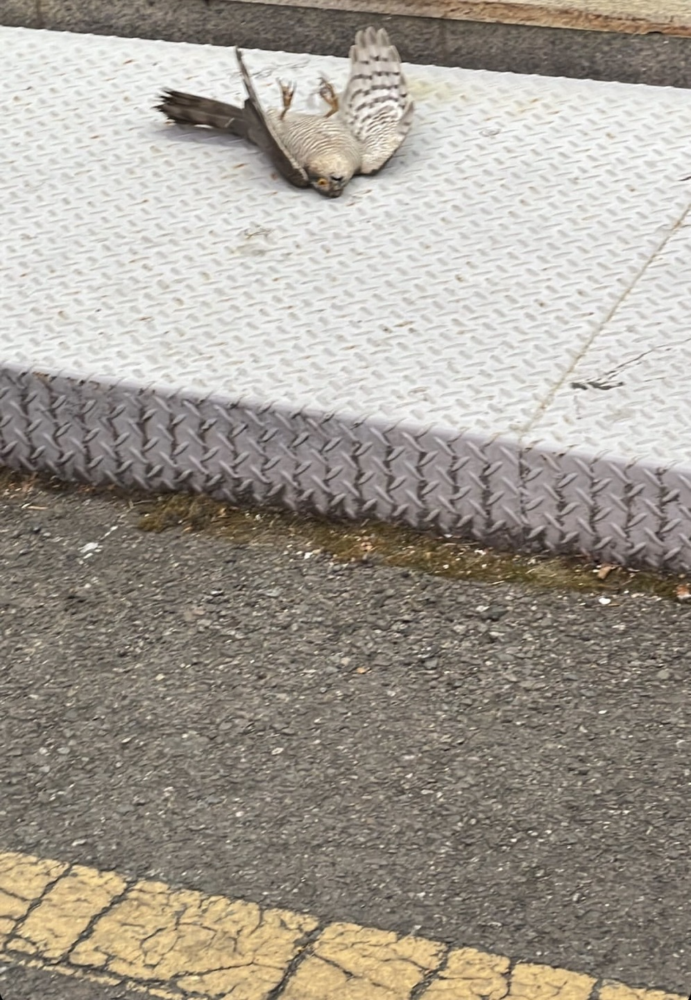
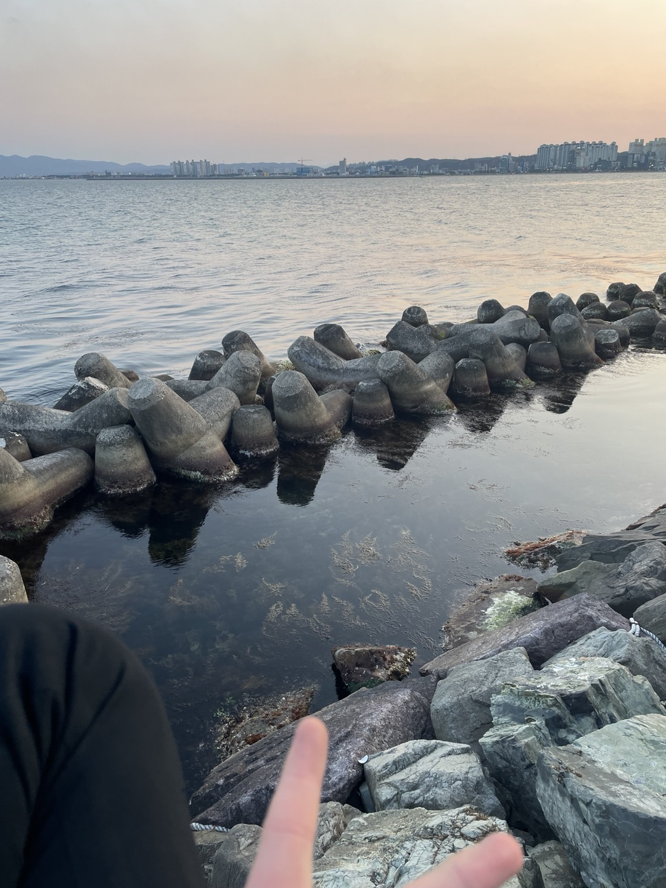
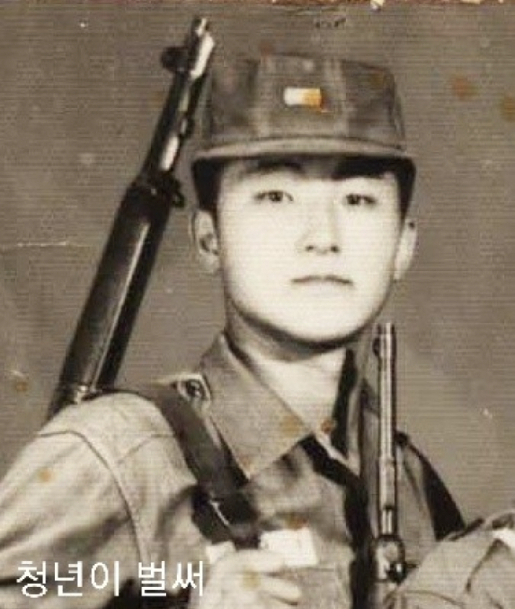
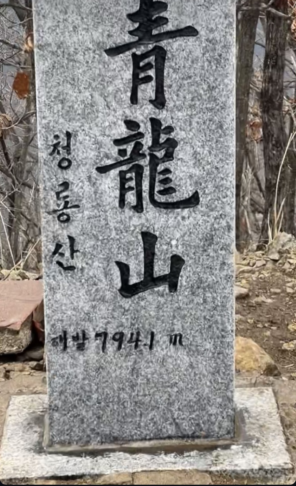
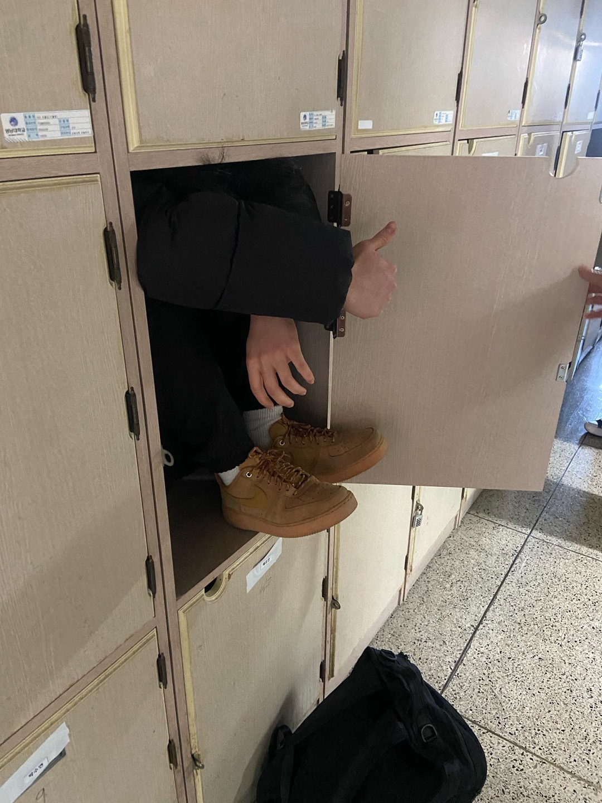
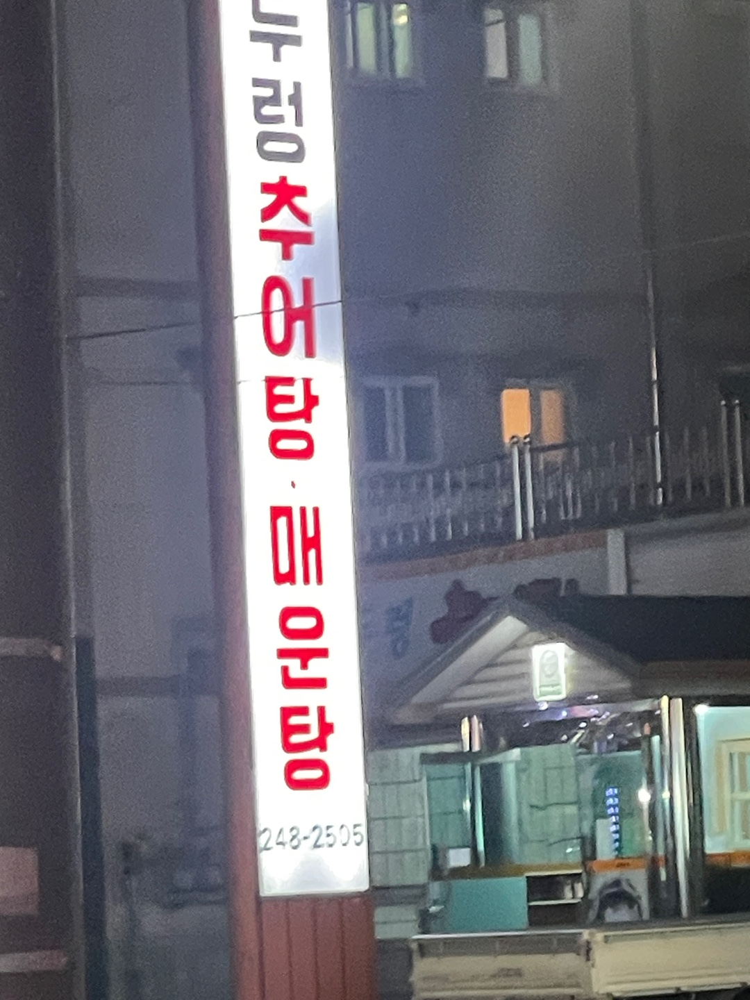
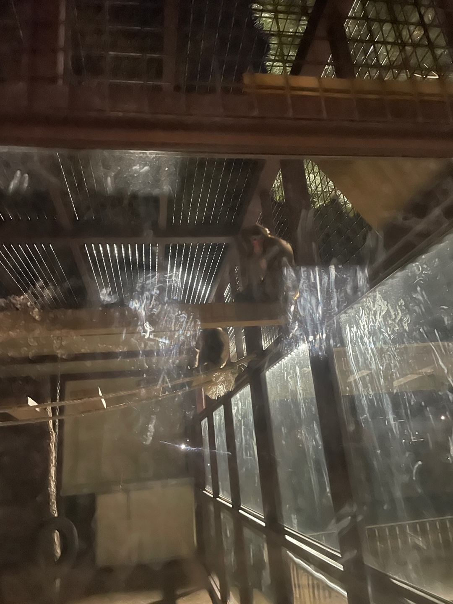
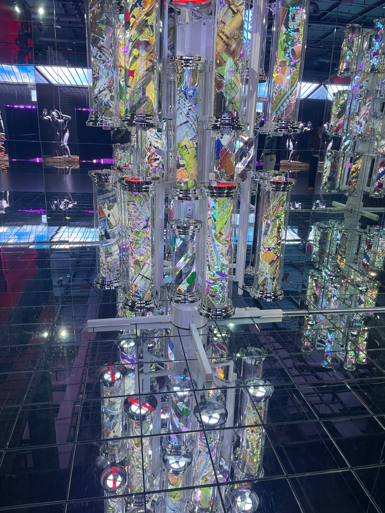
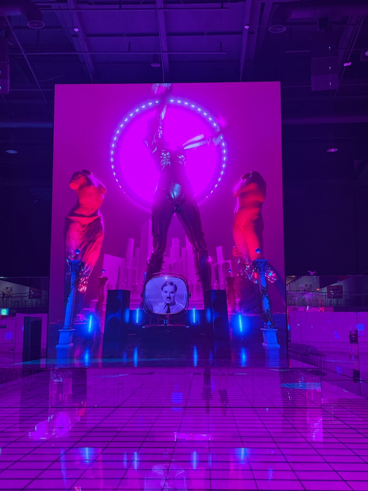

기절한 매
길을 걷던 중 새가 멀리서 날아오더니 유리창에 박고 기절했다. 처음에는 새가 걱정됐다. 하지만 약 5분 뒤 다시 일어나 잘 날았다. 유튜브로 건물 유리가 새들에게 치명적이라는 뉴스를 가끔 봤다. 실제로 그 상황을 보니 매우 안타까웠다. 이 일을 겪으며 건물 유리가 새들에게는 치명적이라는 것을 알았고, 새의 공간지각능력이 떨어진다는 것을 느꼈다. 앞으로 디자인할 때도 동식물을 생각하며 친환경적으로 디자인하겠다.
포항 바다
포항에 내려와 가족들과 바다를 보러 갔다. 인공적으로 예쁜 건축물이나 조형물이 있지만, 그래도 나는 자연의 신비로움이 더 조형적으로 나에게 와닿는다. 사진 속 바다도 태양이 반영되어 주황색과 하늘색이 조화를 이루며 시각적인 즐거움을 준다.
나의 할아버지
주말에 고향에 내려와 할아버지 집을 갔다. 할아버지 집에서 사진첩을 보던 중 할아버지의 옛날 사진을 몇 장 보았다. 할아버지의 젊은 시절이었다. 군복을 입고 총을 멘 할아버지의 모습을 처음 보았는데 신기하고 새로웠다. 지금은 나이가 많아지셨지만, 할아버지도 나처럼 젊었을 때가 있었다는 걸 다시 한번 느꼈다.
자취생 이준우

같은 과 동생이다. 동네에서 자취하여 가볍게 맥주를 하기 위해 이 친구를 불렀다. 그런데 입고 온 옷과 모자가 정말 인상깊었다. 살면서 이런 모자를 본 적도 없고 어떻게 구한 건지도 신기했다. 티셔츠에 적혀있는 글씨도 정말 남다르다 느꼈다. 이 친구에게 본받을 점은 자신감이다. 보기에 우습지만 하고 싶은 걸 하는 당당함은 배우고 싶다.
대구 청룡산
왕복 6시간 청룡산에 갔다. 동아리 활동으로 약 10명 정도가 모여 갔다. 아침 8시부터 지하철과 버스를 타고 산에 갔다. 산행 중에 비도 내리고 배도 고파 중간에 하산한 사람들도 있지만, 나는 끝까지 남아 정상까지 도착했다. 가는 동안 지치고 힘들었지만, 참고 정상에 도착하니 뿌듯했다. 정상에서 보는 하늘과 경치는 예뻤다.
사물함
1학년들에게 사물함이 생겼다. 위치는 3층 화장실 앞이다. 동기들과 함께 가서 구경하다 문득 사람이 여기 들어갈 수 있을까?라는 생각이 들었다. 나는 평소 좁은 공간을 볼 때마다 들어갈 수 있을지 생각해 보곤 한다. 이번에도 궁금증이 생겨 한번 들어가 봤다. 정말 내 예상대로 사람이 알맞게 들어갈 수 있는 크기였다. 새로운 공간이 생겨 기쁘다.
함께 일한 형
포항에 내려와 전에 같이 일했던 형을 보러 왔다. 형이 일하는 가게로 나를 초대해 주셨다. 가서 수육과 추어탕을 먹은 후 그간의 이야기를 했다. 생각해 보면 형과 나이 차이가 17살이 나는데도 불구하고 형 동생 하며 지내는 게 신기하다. 처음 형과 만나 일을 할 때 혼도 많이 나고 화도 났지만, 대학에 와 형들에게 배운 대로 하니 도움이 됐다. 무엇이든 열심히 하면 배울 점이 있다는 걸 느낀다.
동물원 원숭이
공원에 작은 동물원이 있어 보러 갔다. 밤이라 동물들이 거의 자고 있어 잘 보이지 않았다. 그나마 잘 보이는 친구가 원숭이였다. 내가 원숭이띠기도 해서 원숭이에게 동질감을 많이 느낀다. 사진을 찍으러 다가가자 두 원숭이가 서로 껴안으며 겁에 질린 표정으로 나를 바라보았다. 그 순간 왠지 모르게 미안해지며 측은한 마음이 생겼다. 평소에도 동물원을 좋아하지 않았다. 그 이유로는 좁은 유리 속에서 살며, 평생 구경거리인 동물의 삶이 너무 비참해 보였다. 만약 반대로 생각해 인간이 동물이 된다면 나는 정말 힘들고 괴로울 것 같다. 그래서 나는 동물들의 편의와 안전을 보장하지 않는 동물원은 사라졌으면 좋겠다.
부산 전시회1
부산에서 열린 상실의 징후들이라는 전시회를 다녀왔다. 처음 작품을 봤을 때 미용실 간판 옆에 붙어있는 원기둥의 미러볼 같다고 생각했다. 또 현대 사회의 혼란스러움을 표현하며 복잡하고 화려한 사회를 표현하는 것 같았다. 본래의 해석은 사회시스템 속에서 다양한 경계가 교차하는 장소와, 그곳을 둘러싸고 있는 요소들이 있다. 회전 간판에 부착된 파편화된 이미지들은 도시 생태계의 복잡한 것들이 회전하여 어느 것도 뚜렷하게 볼 수 없는 혼재된 경계라고 했다. 어려웠지만, 시각적으로 가장 눈에 띄고 인상깊다.
부산 전시회2
이 작품은 독재자여, 저는 자유입니다라는 작품이다. 처음 작품을 보았을 때 화면 속 로봇이 춤을 추고 있고, 가운데 남자가 독일어를 하고 있었다. 그 장면이 참 기괴하고 새로웠다. 작품의 해석을 본 후 그 뜻을 알았다. 찰리 채플린 영화의 '위대한 독재자'의 연설과 대비하여 무대에서 춤추는 인공지능은 급속한 기술의 발전을 표현한 것이다. 가운데 텔레비전에 있는 사람은 채플린의 연설을 통해 인간관계와 연민의 중요성을 강조하고, 소수의 엘리트가 다수를 통제하는 것을 경고하는 것이다. 사실 너무 심오하여 잘 이해는 되지 않았지만, 이러한 작품들을 통해 나의 가치관과 예술적 시각을 넓히는 것 같아 뜻깊었다.
매1
매2
매3
매4
매5
매6
바다1
바다2
바다3
바다4
바다5
바다6
바다7
바다8
바다9
바다10
바다11
비석1
비석2
비석3
비석4
비석5